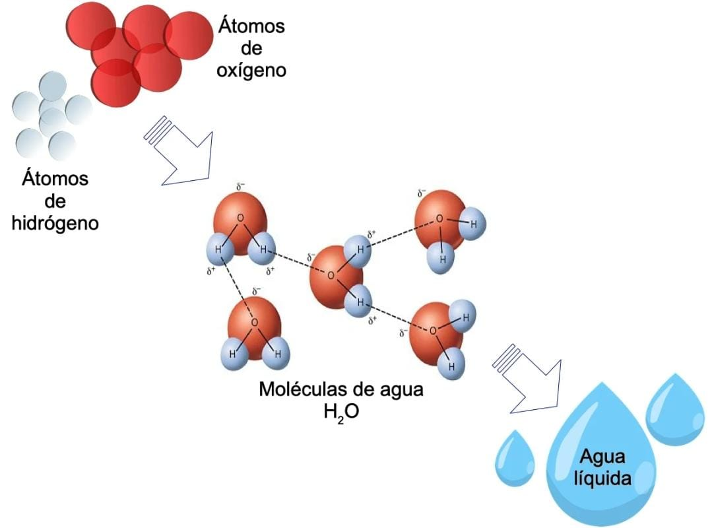
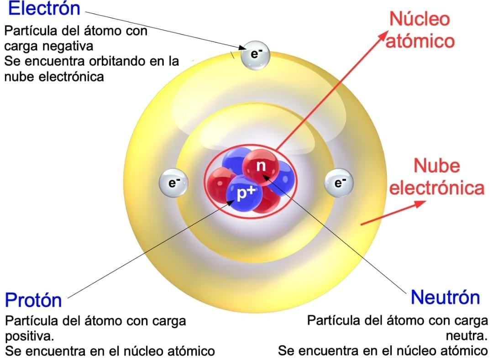
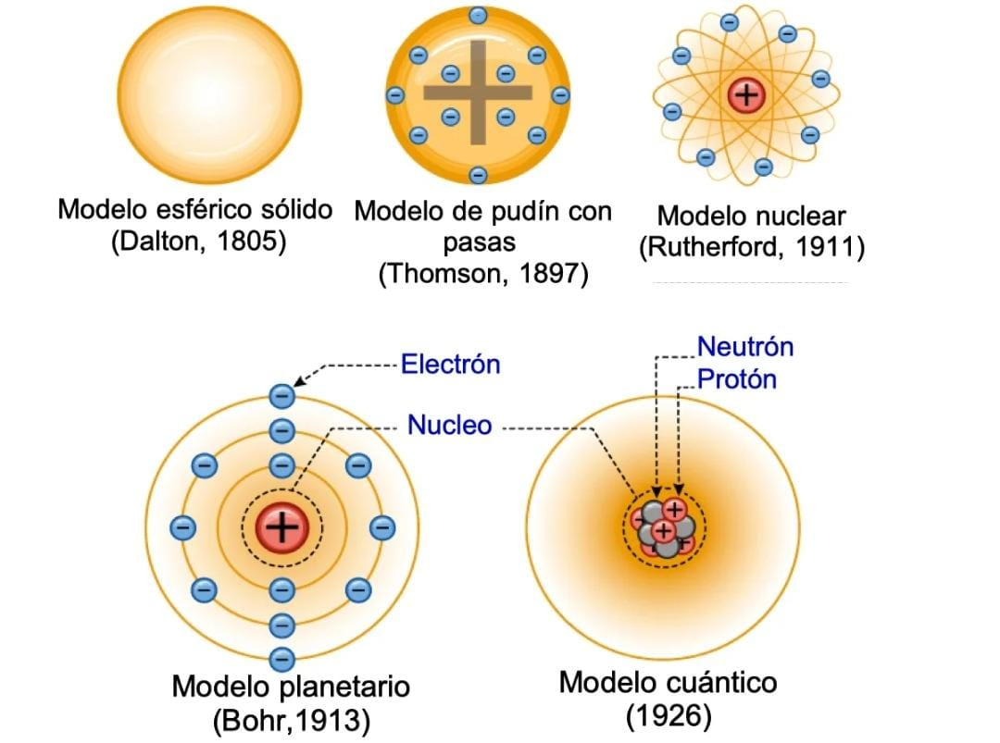

ATOMO
Qué es un Átomo
El átomo es la partícula más simple que forma la materia. En la actualidad se conoce que el átomo está formado por electrones, protones y neutrones, que a su vez están compuestos por partículas más pequeñas, los quarks.
Los átomos de una misma clase forman los elementos de la tabla periódica. Así, los átomos del hidrógeno se caracterizan por tener un electrón y un protón, mientras el átomo de oxígeno posee 8 electrones, 8 protones y 8 neutrones.
Los átomos pueden unirse para formar moléculas. Por ejemplo, el agua está formada por átomos de hidrógeno y oxígeno que se combinan para formar la molécula de agua H2O, esto es, dos átomos de hidrógeno por un átomo de oxígeno.
Si esta combinación cambia, estamos en presencia de otra sustancia, como el agua oxigenada, que está formada por dos átomos de hidrógeno y dos átomos de oxígeno.

Un átomo de oxígeno y dos átomos de hidrógeno se juntan para formar una molécula de agua.
La primera noción del átomo surgió en la antigua Grecia (siglo V a. de C.) con Leucipo y Demócrito. La palabra "átomo" aparece en esta época, para indicar algo que era imposible de dividir.
La idea del átomo vuelve a surgir hasta principio del siglo XIX, gracias al meteorólogo inglés John Dalton. En los dos últimos siglos los avances tecnológicos han permitido profundizar en el conocimiento del átomo, para descubrir sus componentes y estructura.
Estructura y partes del átomo

El átomo está estructurado de la siguiente forma:
Núcleo: concentra los protones y neutrones en el centro del átomo. Tiene carga positiva dada por los protones y representa el 99,9 % de la masa total del átomo. Sin embargo, el núcleo ocupa una ínfima parte del átomo.
Nube electrónica: región externa del átomo donde se encuentran los electrones. Ocupa la mayor parte del átomo.
El átomo está compuesto por los siguientes elementos:
Neutrones
Partícula sin carga eléctrica que se encuentra en el núcleo. El número de neutrones cambia entre los isótopos de un mismo átomo, es decir, átomos con el mismo número de protones pero diferente número de neutrones. Por ejemplo, el nitrógeno (N) tiene 7 protones en su núcleo, pero puede tener dos isótopos: uno con 7 neutrones y otro con 8 neutrones.
El neutrón fue descubierto en 1932 por James Chadwick y el único elemento que no posee neutrones es el hidrógeno.
Protones
Partícula con carga eléctrica positiva, con el valor de +1, que se encuentra en el núcleo. La cantidad de protones de un átomo determina el número atómico Z, el número con el que se ordena en la tabla periódica. Por ejemplo, el hidrógeno tiene un protón y su número atómico es 1, el oxígeno tiene 8 protones y número atómico 8.
El protón fue descubierto en 1919 por Ernest Rutherford.
Electrones
El electrón es la partícula con carga negativa que orbita el núcleo atómico. Los electrones determinan la reactividad química entre los átomos y sus propiedades electromagnéticas.
El descubrimiento del electrón en 1897 permitió a J.J. Thomson postular su modelo atómico.
Historia del átomo

El átomo se ha representado con diferentes modelos atómicos a través de los tiempos.
Los filósofos griegos Leucipo y Demócrito plantearon en el siglo V a. de C. que los materiales podrían dividirse en porciones más pequeñas, hasta un punto donde ya no sería posible seguir dividiéndose. Ese sería el átomo, que en griego significa "indivisible".
La primera teoría atómica fue propuesta por John Dalton en 1805. En su teoría, Dalton presentaba los átomos como simples partículas, que al unirse, formaban los materiales que vemos y conocemos.
Cuando se descubrió el electrón al final del siglo XIX, J.J. Thomson propuso un modelo donde el átomo era representado por una masa con carga positiva con inclusiones de electrones. A este modelo se le conoció como el modelo de pudin con pasas.
En 1911 Rutherford estableció un nuevo modelo atómico parecido al sistema solar, donde el átomo estaba representado por un núcleo central que era rodeado por los electrones.
En 1913, Niels Bohr critica el modelo atómico de Rutherford, y crea el modelo atómico planetario. En este, los electrones giran en órbitas predeterminadas alrededor del núcleo central, como los planetas orbitan el Sol.
Apenas en 1919 se descubrió el protón y una década después el neutrón. Luego, con la construcción de los aceleradores de partículas se han detectado otras partículas subatómicas, como los quarks.
El modelo atómico cuántico más reciente establece que el átomo está estructurado como un núcleo central donde protones y neutrones se agrupan, mientras los electrones se encuentran en una nube de probabilidades alrededor del núcleo.
La primera foto de átomos pesados, el uranio y el torio, fue tomada en 1970 usando un microscopio electrónico de alta resolución.
INICIO